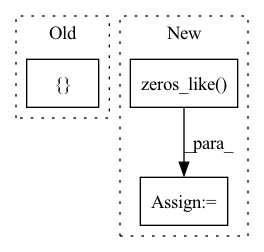

Pattern ID :1935

Before Change
rois = rois.cuda()
indices_and_rois = torch.cat([roi_indices[:, None], rois], dim=1)
xy_indices_and_rois = indices_and_rois[:, [0, 1, 2, 3, 4]]
indices_and_rois = xy_indices_and_rois.contiguous()
// 利用建议框对公用特征层进行截取
pool = self.roi(x, indices_and_rois)
After Change
roi_indices = roi_indices.cuda()
rois = rois.cuda()
rois_feature_map = torch.zeros_like(rois)
rois_feature_map[:, [0,2]] = rois[:, [0,2]] / img_size[1] * x.size()[3]
rois_feature_map[:, [1,3]] = rois[:, [1,3]] / img_size[0] * x.size()[2]
In pattern: SUPERPATTERN
Frequency: 5
Non-data size: 3
Instances
Fragment ID: 13435375
Project Name: bubbliiiing/faster-rcnn-pytorch
Commit Name: d456f02a402fd8cf8db1d991aa612439b3c0ffb2
Time: 2021-01-30
Author: 47347516+bubbliiiing@users.noreply.github.com
File Name: nets/classifier.py
M Class Name: VGG16RoIHead
N Class Name: VGG16RoIHead
M Method Name: forward(5)
N Method Name: forward(4)
M Parent Class: nn.Module
N Parent Class: nn.Module
M File Name: nets/classifier.py
N File Name: nets/classifier.py
M Start Line: 31
M End Line: 39
N Start Line: 33
N End Line: 59
'>
Before Change
self.out_dim = out_channels
def forward(self, x, edge_index, edge_weight=None):
return ZeroConvFunc.apply(torch.zeros([x.size(0), self.out_dim]).to(x.device))
def __repr__(self):
return "{}({}, {})".format(self.__class__.__name__, self.in_channels,
After Change
class ZeroConv(nn.Module):
def forward(self, x, edge_index, edge_weight=None):
out = torch.zeros_like(x)
out.requires_grad = True
return out
def __repr__(self):
'>
Fragment ID: 13435374
Project Name: thumnlab/autogl
Commit Name: ff02f3a951d55e796e385682eb94c50212f885c2
Time: 2021-06-23
Author: frozenmad2015@outlook.com
File Name: autogl/module/nas/space/operation.py
M Class Name: ZeroConv
N Class Name: ZeroConv
M Method Name: forward(4)
N Method Name: forward(4)
M Parent Class: nn.Module
N Parent Class: nn.Module
M File Name: autogl/module/nas/space/operation.py
N File Name: autogl/module/nas/space/operation.py
M Start Line: 117
M End Line: 117
N Start Line: 35
N End Line: 37
'>
Before Change
indices_and_rois = torch.cat([roi_indices[:, None], rois], dim=1)
xy_indices_and_rois = indices_and_rois[:, [0, 1, 2, 3, 4]]
indices_and_rois = xy_indices_and_rois.contiguous()
// 利用建议框对公用特征层进行截取
pool = self.roi(x, indices_and_rois)
After Change
roi_indices = roi_indices.cuda()
rois = rois.cuda()
rois_feature_map = torch.zeros_like(rois)
rois_feature_map[:, [0,2]] = rois[:, [0,2]] / img_size[1] * x.size()[3]
rois_feature_map[:, [1,3]] = rois[:, [1,3]] / img_size[0] * x.size()[2]
indices_and_rois = torch.cat([roi_indices[:, None], rois_feature_map], dim=1)
//-----------------------------------//
// 利用建议框对公用特征层进行截取
//-----------------------------------//
pool = self.roi(x, indices_and_rois)
//-----------------------------------//
// 利用classifier网络进行特征提取
//-----------------------------------//
fc7 = self.classifier(pool)
// 当输入为一张图片的时候，这里获得的f7的shape为[300, 2048]
fc7 = fc7.view(fc7.size(0), -1)
roi_cls_locs = self.cls_loc(fc7)
roi_scores = self.score(fc7)
roi_cls_locs = roi_cls_locs.view(n, -1, roi_cls_locs.size(1))
roi_scores = roi_scores.view(n, -1, roi_scores.size(1))
return roi_cls_locs, roi_scores
def normal_init(m, mean, stddev, truncated=False):
'>
Fragment ID: 13435384
Project Name: bubbliiiing/faster-rcnn-pytorch
Commit Name: d456f02a402fd8cf8db1d991aa612439b3c0ffb2
Time: 2021-01-30
Author: 47347516+bubbliiiing@users.noreply.github.com
File Name: nets/classifier.py
M Class Name: Resnet50RoIHead
N Class Name: Resnet50RoIHead
M Method Name: forward(5)
N Method Name: forward(4)
M Parent Class: nn.Module
N Parent Class: nn.Module
M File Name: nets/classifier.py
N File Name: nets/classifier.py
M Start Line: 68
M End Line: 77
N Start Line: 82
N End Line: 107
'>
Before Change
def forward(self, proba, targets):
n_classes = proba.size(1)
loss = {}
for i in range(n_classes):
pi = proba[:, i] * (targets == i) + (1 - proba[:, i]) * (targets != i)
ai = self.alpha[i]
loss += -ai * (1 - pi) ** self.gamma * torch.log(pi)
After Change
def forward(self, logits, targets):
proba = self.softmax(logits)
n_classes = proba.size(1)
loss = torch.zeros_like(targets).type(torch.float)
for i in range(n_classes):
pi = proba[:, i] * (targets == i) + (1 - proba[:, i]) * (targets != i)
ai = self.alpha[i]
'>
Fragment ID: 13435386
Project Name: ignf/lidar-deep-segmentation
Commit Name: 323659b3af8b12e9f9e2c0a64026900bb3bab2f9
Time: 2021-10-11
Author: charles.gaydon@gmail.com
File Name: semantic_val/models/point_net_model.py
M Class Name: WeightedFocalLoss
N Class Name: WeightedFocalLoss
M Method Name: forward(3)
N Method Name: forward(3)
M Parent Class: nn.Module
N Parent Class: nn.Module
M File Name: semantic_val/models/point_net_model.py
N File Name: semantic_val/models/point_net_model.py
M Start Line: 35
M End Line: 39
N Start Line: 38
N End Line: 44
'>
Before Change
encoder_mask = encoder_mask.unsqueeze(-1)
level = encoder_y[:, -1:].repeat(1, self.prediction_length, 1) // Level with Naive1
block_forecasts = [level]
block_backcasts = [encoder_y[:, -1:].repeat(1, self.context_length, 1)]
forecast = level
After Change
else:
block_forecasts = []
block_backcasts = []
forecast = torch.zeros_like(forecast_level, device=forecast_level.device)
// forecast by block
for block in self.blocks:
block_backcast, block_forecast = block(
'>
Fragment ID: 13435378
Project Name: jdb78/pytorch-forecasting
Commit Name: e7175c98af01f4c8f9aadb90c53aa4f0d1540931
Time: 2022-03-30
Author: beitner.jan@bcg.com
File Name: pytorch_forecasting/models/nhits/sub_modules.py
M Class Name: NHiTS
N Class Name: NHiTS
M Method Name: forward(6)
N Method Name: forward(6)
M Parent Class: nn.Module
N Parent Class: nn.Module
M File Name: pytorch_forecasting/models/nhits/sub_modules.py
N File Name: pytorch_forecasting/models/nhits/sub_modules.py
M Start Line: 328
M End Line: 332
N Start Line: 342
N End Line: 357